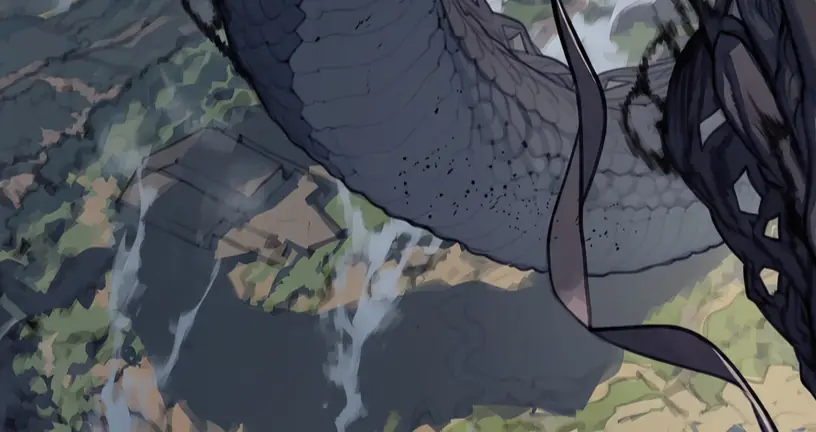
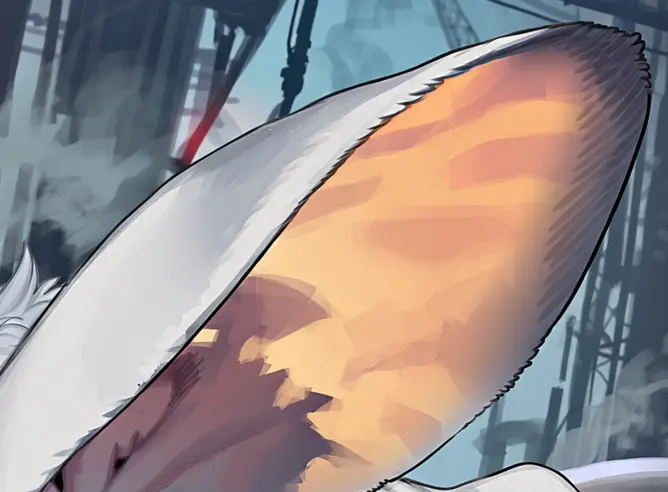
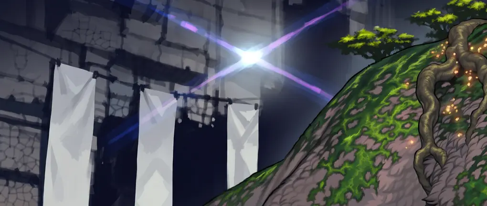

TIMELINE
30년 전에 한 번 끝났다
재건 시도는 전부 무산됐고, 지금 남은 것은 그 잔해 위에 다시 세워진 질서뿐이다.
-30
붕괴
각지에 균열이 열리며 크리처가 대량으로 넘어왔다. 국가와 행정은 몇 달을 버티지 못하고 무너졌다.
-30 → 0
재건 실패
여러 차례 시도가 있었지만 전부 무산됐다. 구 세계의 지식도 이 과정에서 대부분 소실됐다.
NOW
현재
균열은 지금도 간헐적으로 열린다. 닫는 방법은 여전히 알려지지 않았다.
서른 살이 넘은 사람은 대붕괴를 어렴풋이 기억한다. 그 아래 세대는 붕괴 이후의 세계밖에 모른다.
TERRAIN
무대는 무저갱, 세 겹으로 나뉜다
안쪽으로 들어갈수록 균열이 잦아지고, 바깥으로 나올수록 규칙이 생긴다.

DEEP
심층
구 도심이 그대로 묻혀 있는 구역이다. 균열이 가장 촘촘하게 몰려 있고 재해급 개체가 서식한다. 들어가는 사람은 있어도 돌아 나오는 사람은 드물다.

RUINS
잔해지
심층과 거점지대 사이에 깔린 폐허 벨트. 누구의 관할도 아니라서 거래와 약탈이 같은 자리에서 벌어진다. 대부분의 사건이 여기서 시작된다.

STRONGHOLD
거점지대
외곽에 자리 잡은 네 조직의 요새다. 배급과 치안이 돌아가는 유일한 구역이지만, 그 규칙은 어디까지나 담장 안에서만 작동한다.
RULES
이 세계가 굴러가는 방식
알아 두지 않으면 첫날부터 막히는 것들만 모았다.
화폐
돈은 붕괴와 함께 종잇장이 됐다. 지금 통용되는 것은 크리처 사체에서 나오는 코어와 파편이며, 이것은 화폐인 동시에 파트너를 강화하는 자원이기도 하다.
테이머
생존자는 전원 파트너 한 체를 둔다. 그중 실제로 싸울 수 있는 사람은 소수고, 대다수는 1단계 언저리에서 멈춘다. 그 정점에 있는 다섯 명을 랭커라고 부른다.
계약
계약에 필요한 도구나 매개물은 없다. 손을 대고 서로 받아들이면 그것으로 성립한다.
다만 한 사람이 맺을 수 있는 계약은 하나뿐이다. 파트너가 살아 있는 한 다른 개체와는 계약할 수 없고, 잃은 뒤에야 다시 가능해진다.
다만 한 사람이 맺을 수 있는 계약은 하나뿐이다. 파트너가 살아 있는 한 다른 개체와는 계약할 수 없고, 잃은 뒤에야 다시 가능해진다.
전투
싸우는 쪽은 파트너다. 테이머가 맡는 것은 지시와 판단, 그리고 엄호다. 사람이 직접 무기를 들고 맞붙는 장면은 극히 드물게만 나온다.
육체
파트너가 강해질수록 테이머의 몸도 그 성질을 닮아 간다. 브루트를 데리고 다니면 완력이, 헥스를 데리고 다니면 감각이 예민해지는 식이다. 다만 튼튼해지는 수준이지 초인이 되지는 않는다.
불가침
안전지대 안에서는 싸우지 않는다는 식의 암묵적 협정이 있다. 문서로 남은 적은 없고, 그래서 언제든 깨질 수 있는 균형이다.
RIFT
균열에 대해 알려진 것
30년 동안 사람들이 알아낸 것은 생각보다 적다.
확인된 것
30년 전 각지에서 동시에 열렸고, 지금도 간헐적으로 열린다. 새로운 개체는 예외 없이 이쪽을 통해 들어온다.
확인되지 않은 것
여는 조건, 닫는 방법, 그리고 저편에 무엇이 있는지. 세 가지 모두 30년째 그대로다.
다만 심층 안쪽까지 혼자 들어갔다 나오는 노인이 하나 있다는 이야기가 잔해지에 돈다. 그가 무엇을 봤다고 말하든, 증명할 방법이 없어 아무도 믿지 않는다.